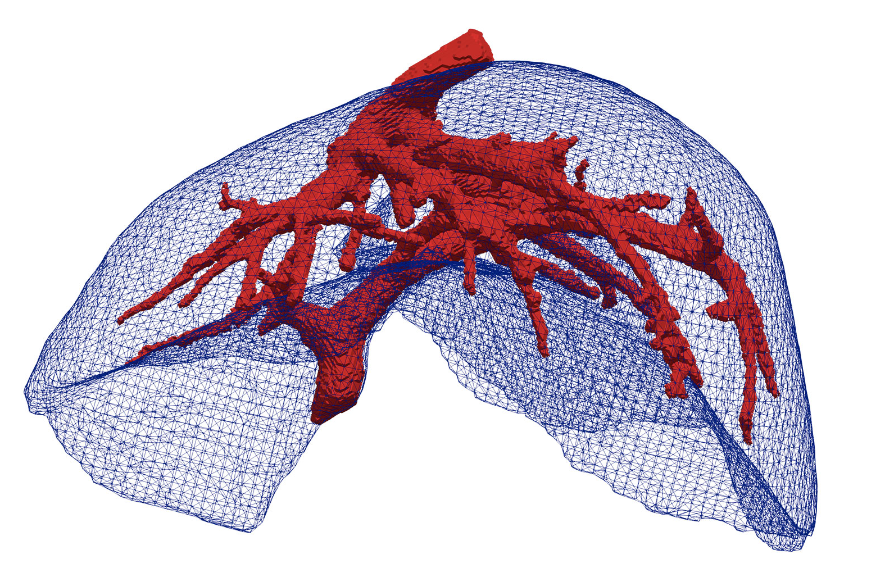
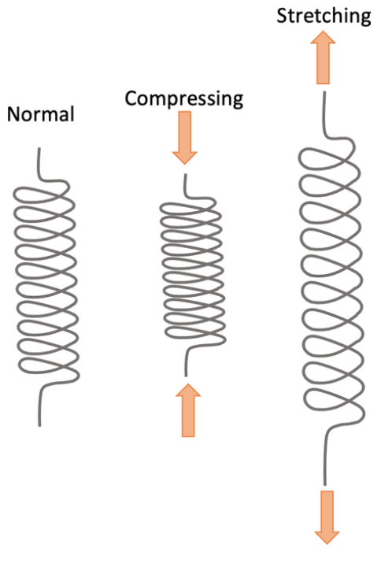

Domaine applicatif
L’équipe de recherche MIMESIS travaille sur un ensemble de défis dans le but de créer des jumeaux numériques en temps réel d’un organe. Leurs principaux domaines d’application sont la formation chirurgicale et le guidage chirurgical lors d’interventions complexes. Leurs principaux objectifs cliniques sont la chirurgie hépatique, la chirurgie pulmonaire et la Neuro-stimulation.
Dans mon cas, je travaille sur le sujet intitulé : « Développement de méthodes hybrides éléments finis/réseaux neuronaux pour aider à créer des jumeaux chirurgicaux numériques ». Pour fair simple, l’idée est de simuler numériquement en temps réel certains comportements physiques qui peuvent avoir lieu pendant une intervention chirurgicale.

Figure 1. Représentation d’un foie.
|
Le terme « jumeaux chirurgicaux numériques » désigne en fait la modélisation numérique d’un organe (en particulier le foie). Mon travail ne consiste pas à modéliser ces organes numériquement, mais à développer de nouvelles méthodes pour simuler, le plus rapidement possible, certains phénomènes physiques appliqués à l’organe en question. Un exemple d’un de ces phénomènes physiques pourraient être les déformations de l’organe si le chirurgien applique une pression à un endroit précis. La modélisation aura alors pour objectif de simuler quelle forme prendra le foie à partir, par exemple, de la force appliquée et de l’endroit où le chirurgien appuie. |
Un exemple plus simple et assez classique de ce type de phénomène est le cas d’un ressort. Imaginons que l’on possède un ressort à son état normal.
Dans le contexte d’un organe, l’idée (très simplifiée ici) est en principe la même (excepté qu’un foie n’aura pas les mêmes propriétés physiques qu’un ressort). |

Figure 2. Déformation d’un ressort.
|
En pratique, ces phénomènes physiques sont décrits par des équations mathématiques qui peuvent être assez complexes à résoudre. Les équations qui décrivent ces phénomènes sont déjà connus et un ensemble de méthodes numériques visant à les résoudre ont déjà été développées au cours des années précédentes. La complexité là-dedans réside dans la rapidité d’exécution des simulations, en rappelant qu’encore une fois l’objectif est que ces modélisations soient utilisables en temps réel, c’est-à-dire assez rapide pour être applicable pendant une intervention chirurgicale.